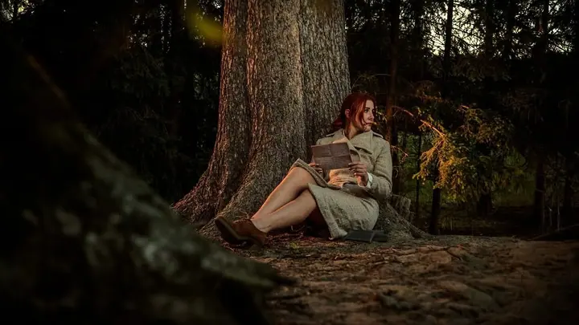

Filip Malý, Kameraman & fotograf. Fotky, které pracují za vaši firmu

FILIP MALÝ REC HRADEC KRÁLOVÉ 01 / 08( 01 ) Úvod
Jmenuji se Filip a fotím firmy, svatby, portréty a eventy, natáčím i videa v Hradci Králové i všude, kam mě pozvete. Dobrá fotka má jasný úkol : ukázat, kdo jste, a přesvědčit dřív, než si to člověk vůbec uvědomí .
( 02 ) Portfolio
Vybraná práce
Táhněte do strany →
na Instagramu@figolas1995 ↗
( 03 ) Služby
Co pro vás udělám
-
01
Firemní a brand foto
Portréty týmu, prostory, zákulisí. Fotky na web a sítě, které vypadají jako vy, ne jako fotobanka.
-
02
Svatby
Od příprav po první tanec. Nenápadně a bez strojeného aranžování, abyste si den užili a fotky pak vyprávěly, jaký opravdu byl.
-
03
Portréty
Pro vás, pro profil, pro radost. S pózou i nervozitou pomohu, většina lidí po deseti minutách zapomene, že fotím.
-
04
Eventy a koncerty
Konference, večírky, koncerty. Reportáž, která zachytí atmosféru i lidi, kvůli kterým to celé bylo.
-
05
Video
Krátká videa pro sítě i delší filmy. Obraz, střih a zvuk tak, aby se na to dalo dívat až do konce.
( 04 ) Proces
Od zadání po hotové fotky
- 01
Napíšete mi
Pár vět o tom, co si představujete, a termín, který se vám hodí. Ozvu se vám zpátky.
- 02
Domluvíme detaily
Účel, rozsah, místo a termín. Ať přesně víme, co budete s fotkami dělat a kolik jich potřebujete.
- 03
Focení
Připravím světlo i scénu. Vy se soustředíte na svou práci, já na obraz.
- 04
Hotové fotky
Fotky upravené pro web, sítě i tisk, ve formátech, které opravdu použijete.
1 253lidí sleduje mou práci na Instagramu
825příspěvků s fotkami a příběhy
( 05 ) O mně
Filip Malý
Zakázku beru jako spolupráci. Nejdřív zjistím, k čemu budete fotky používat, a podle toho volím světlo, místo i styl. Výsledkem jsou snímky, které vám poslouží roky, ne jednu sezónu.
Základnu mám v Hradci Králové, za zakázkami jezdím po celé republice. Domluvit se dá i natáčení, úpravy a dodání v termínu, který potřebujete.
( 06 ) FAQ
Časté otázky
Kolik fotek dostaneme?
Záleží na zadání. Předem se domluvíme, co přesně potřebujete, jestli web, sítě nebo tisk, a podle toho připravím rozsah i cenu.
Fotíte i přímo u nás ve firmě?
Ano, přivezu světla i pozadí. Focení týmu se dá zvládnout za jedno dopoledne bez velkého narušení provozu.
Natáčíte i video?
Ano. Krátká videa pro sítě i delší firemní filmy, včetně střihu a barevných úprav.
Jak rychle budou fotky hotové?
Termín odevzdání si řekneme hned na začátku a držím se ho. Když hoří čas, dá se domluvit i expresní dodání.
( 07 ) Kontakt
Máte zakázku?
info@filipmaly.cz ↗- Instagram@figolas1995
- PůsobímHradec Králové, ČR